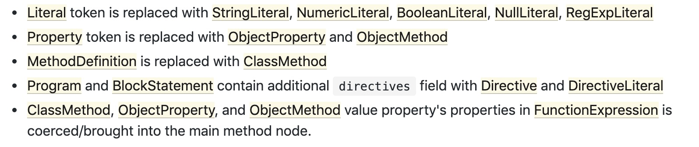

esprima
简介
- esprima是比较早的一个parser,高性能，符合标准，支持es7
- 只支持解析JavaScript代码，不支持ts，flow
- parseModule支持parse一个es的module
- parseScript(‘var el=
${product} ‘, { jsx: true }); 可以支持解析jsx，但是没办法parse一个含有jsx的module - ast format,从Mozilla Parser API,继承而来，并且最终扩展为ESTree format
用法
1 | const esprima = require('esprima'); |
acorn
简介
- acorn: A tiny, fast JavaScript parser, written completely in JavaScript
- 支持插件扩展，所以可以基于acorn，扩展出解析各种JavaScript代码
- acorn-walk用来遍历ast的node
- AST格式是 ESTree format
用例
1 | const {Parser} = require("acorn") |
babel
parser
- babel/parser,以前叫Babylon，底层依赖acorn,jsx的支持是也是用的acorn的插件acorn-jsx
- 使用插件的方式，支持最新的es语法以及jsx,flow,ts，所有插件
- ast format是基于ESTree改的。如果要使用estree格式，plugins中传入
estree即可，差异有以下一些
 jsx format是另一种格式
示例代码
1
2
3
4
5
6
7
8
9
10require("@babel/parser").parse("code", {
// parse in strict mode and allow module declarations
sourceType: "module",
plugins: [
// enable jsx and flow syntax
"jsx",
"flow"
]
});
traverse
- 配合parser生成的ast，遍历,对ast进行增删改操作
- 示例代码
1
2
3
4
5
6
7
8
9
10
11
12
13
14
15
16import * as parser from "@babel/parser";
import traverse from "@babel/traverse";
const code = `function square(n) {
return n * n;
}`;
const ast = parser.parse(code);
traverse(ast, {
enter(path) {
if (path.isIdentifier({ name: "n" })) {
path.node.name = "x";
}
}
});
generator
- 按照一定的规则输出代码，所以重新输出的代码和源代码相比，格式会变化比较大。
- 示例
1
2
3
4
5
6
7
8
9
10
11
12
13
14
15
16
17import {parse} from '@babel/parser';
import generate from '@babel/generator';
const a = `function handler() {
var a = "1";
var b = {
a: '1'
}
}`;
const ast = parse(a);
const { code, map } = generate(ast);
// function handler() {
// var a = "1";
// var b = {
// a: '1' };
//
// }
recast
简介
一大特色就是在print的时候会尽量的保持源代码的格式，输出时只会重新输出有修改的ast，未更改过的ast，会直接按原样输出。所以非常适合那些需要修改源码，并且要把修改后的结果覆写到源码的情况。但是前提是需要使用recast的parser，不要在print的时候使用一个用别的工具parse出来的ast。就算不是默认的parser，也可以这么用
1
2
3const acornAst = recast.parse(source, {
parser: require("acorn")
});recast 默认使用esprima作为parser,支持传入自定义parser，比如babel/parser，recast也提供了便捷的方式来使用其他parser，所有parser地址。要使用其他parser，需自己安装对应的parser包，安装recast时只会自动安装默认的exprima
1
2
3const tsAst = recast.parse(source, {
parser: require("recast/parsers/typescript")
});print支持格式化参数，比如单双引号，换行符之类的。
- 使用ast-types作为ast的格式，这个是继承自Mozilla Parser API，但是兼容esprima的
- 因为默认的esprima不支持jsx，所以在react项目中，就需要使用babel的parser
1
2
3const ast = recast.parse(code, {
parser: require("recast/parsers/babel")
})
示例
1 | import * as recast from "recast"; |
jscodeshift
简介
jscodeshift是facebook开源的一个JavaScript codemod toolkit。提供了大量的便捷方法去操作ast
1
2
3
4
5
6
7// inside a module transform
var j = jscodeshift;
// foo(bar);
var ast = j.callExpression(
j.identifier('foo'),
[j.identifier('bar')]
);底层依赖recast，并且默认使用babel/parser传递给recast，并且使用了jsx的plugin，所以支持react的jsx代码,源代码实现
1
2
3
4
5
6
7
8
9
10
11
12
13
14
15
16
17
18
19
20
21
22
23
24const babylon = require('@babel/parser');
const options = {
sourceType: 'module',
allowHashBang: true,
ecmaVersion: Infinity,
allowImportExportEverywhere: true,
allowReturnOutsideFunction: true,
startLine: 1,
tokens: true,
plugins: [
'estree',
'jsx',
'asyncGenerators',
'classProperties',
'doExpressions',
'exportExtensions',
'functionBind',
'functionSent',
'objectRestSpread',
'dynamicImport',
'nullishCoalescingOperator',
'optionalChaining',
],
};toSource方法使用的是recast的print
- 把recast.types.namedTypes，recast.types.builders下的所有属性都挂在实例上了，便于取用。
示例
1 | const j = require('jscodeshift'); |